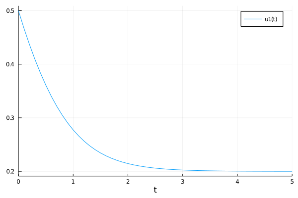
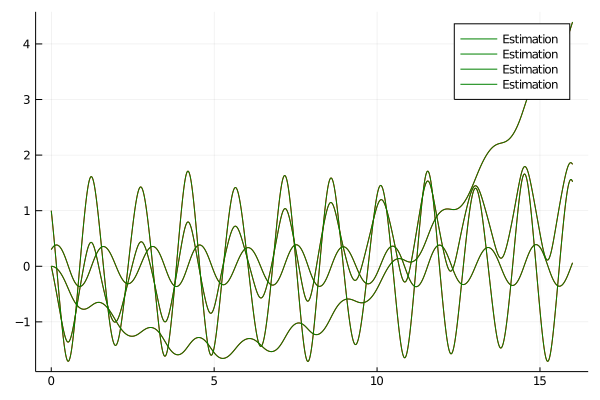

Implicit Sparse Identification of Nonlinear Dynamics
While SINDy works well for ODEs, some systems take the form of DAEs. A common form is f(x, p, t) - g(x, p, t)*dx = 0. These can be inferred via ISINDy, which extends SINDy for Implicit problems. In particular, it solves
where $\Xi$ lies in the nullspace of $\Theta$.
Example : Michaelis-Menten Kinetics
Let's try to infer the Michaelis-Menten Kinetics, like in the corresponding paper. We start by generating the corresponding data.
using DataDrivenDiffEq
using ModelingToolkit
using OrdinaryDiffEq
using LinearAlgebra
using Plots
gr()
function michaelis_menten(u, p, t)
[0.6 - 1.5u[1]/(0.3+u[1])]
end
u0 = [0.5]
tspan = (0.0, 5.0)
problem = ODEProblem(michaelis_menten, u0, tspan)
solution = solve(problem, Tsit5(), saveat = 0.1, atol = 1e-7, rtol = 1e-7)
savefig("iSINDy_example.png")
X = solution[:,:]
DX = similar(X)
for (i, xi) in enumerate(eachcol(X))
DX[:, i] = michaelis_menten(xi, [], 0.0)
end
@variables u
basis= Basis([u^i for i in 0:4], [u])\begin{align} \varphi{1} =& 1 \ \varphi{2} =& u \ \varphi{3} =& u^{2} \ \varphi{4} =& u^{3} \ \varphi{_5} =& u^{4} \end{align}
The signature of ISINDy is equal to SINDy, but requires an AbstractSubspaceOptimizer. Currently, DataDrivenDiffEq just implements ADM() based on alternating directions. rtol gets passed into the derivation of the nullspace via LinearAlgebra.
opt = ADM(1.1e-1)ADM{Float64,ProximalOperators.NormL1{Float64}}(0.11, description : weighted L1 norm
domain : AbstractArray{Real}, AbstractArray{Complex}
expression : x ↦ λ||x||_1
parameters : λ = 0.11)Since ADM() returns sparsified columns of the nullspace we need to find a pareto optimal solution. To achieve this, we provide a sufficient cost function g to ISINDy. This allows us to evaluate each individual column of the sparse matrix on its 0-norm (sparsity) and the 2-norm of the matrix vector product of $\Theta^T \xi$ (nullspace). This is a default setting which can be changed by providing a function f which maps the coefficients and the library onto a feature space. Here, we want to set the focus on the the magnitude of the deviation from the nullspace.
Ψ = ISINDy(X, DX, basis, opt, g = x->norm([1e-1*x[1]; x[2]]), maxiter = 100)The function call returns a SparseIdentificationResult. As in Sparse Identification of Nonlinear Dynamics, we can transform the SparseIdentificationResult into an ODESystem.
# Transform into ODE System
sys = ODESystem(Ψ)
dudt = ODEFunction(sys)
ps = parameters(Ψ)
estimator = ODEProblem(dudt, u0, tspan, ps)
estimation = solve(estimator, Tsit5(), saveat = 0.1)
The model recovered by ISINDy is correct
print_equations(Ψ)##Basis#382 : 1 dimensional basis in ["u"]
Parameters : SymbolicUtils.Sym{ModelingToolkit.Parameter{Real}}[p₁, p₂, p₃, p₄]
Independent variable: t
Equations
φ₁ = ((p₁ + (p₃*u))^-1)*((-p₂) - (p₄*u))The parameters are off a little, but, as before, we can use DiffEqFlux to tune them.
Example : Cart-Pole with Time-Dependent Control
Implicit dynamics can also be reformulated as an explicit problem as stated in this paper. The algorithm searches the correct equations by trying out all candidate functions as a right hand side and performing a sparse regression onto the remaining set of candidates. Let's start by defining the problem and generate the data:
using DataDrivenDiffEq
using ModelingToolkit
using OrdinaryDiffEq
using LinearAlgebra
using Plots
gr()
function cart_pole(u, p, t)
du = similar(u)
F = -0.2 + 0.5*sin(6*t) # the input
du[1] = u[3]
du[2] = u[4]
du[3] = -(19.62*sin(u[1])+sin(u[1])*cos(u[1])*u[3]^2+F*cos(u[1]))/(2-cos(u[1])^2)
du[4] = -(sin(u[1])*u[3]^2 + 9.81*sin(u[1])*cos(u[1])+F)/(2-cos(u[1])^2)
return du
end
u0 = [0.3; 0; 1.0; 0]
tspan = (0.0, 16.0)
dt = 0.001
cart_pole_prob = ODEProblem(cart_pole, u0, tspan)
solution = solve(cart_pole_prob, Tsit5(), saveat = dt)
# Create the differential data
X = solution[:,:]
DX = similar(X)
for (i, xi) in enumerate(eachcol(X))
DX[:, i] = cart_pole(xi, [], solution.t[i])
end
We see that we include a forcing term F inside the model which is depending on t. As before, we will also need a Basis to derive our equations from:
@variables u[1:4] t
polys = Any[]
for i ∈ 0:4
if i == 0
push!(polys, u[1]^0)
else
if i < 2
push!(polys, u.^i...)
else
push!(polys, u[3:4].^i...)
end
end
end
push!(polys, sin.(u[1])...)
push!(polys, cos.(u[1]))
push!(polys, sin.(u[1]).*u[3:4]...)
push!(polys, sin.(u[1]).*u[3:4].^2...)
push!(polys, cos.(u[1]).^2...)
push!(polys, sin.(u[1]).*cos.(u[1])...)
push!(polys, sin.(u[1]).*cos.(u[1]).*u[3:4]...)
push!(polys, sin.(u[1]).*cos.(u[1]).*u[3:4].^2...)
push!(polys, -0.2+0.5*sin(6*t))
push!(polys, (-0.2+0.5*sin(6*t))*cos(u[1]))
push!(polys, (-0.2+0.5*sin(6*t))*sin(u[1]))
basis= Basis(polys, u, iv = t)\begin{align} \varphi{1} =& 1 \ \varphi{2} =& u{1} \ \varphi{3} =& u{2} \ \varphi{4} =& u{3} \ \varphi{5} =& u{4} \ \varphi{6} =& u{3}^{2} \ \varphi{7} =& u{4}^{2} \ \varphi{8} =& u{3}^{3} \ \varphi{9} =& u{4}^{3} \ \varphi{{10}} =& u{3}^{4} \ \varphi{{11}} =& u{4}^{4} \ \varphi{{12}} =& \sin\left( u{1} \right) \ \varphi{{13}} =& \cos\left( u{1} \right) \ \varphi{{14}} =& u{3} \sin\left( u{1} \right) \ \varphi{{15}} =& u{4} \sin\left( u{1} \right) \ \varphi{{16}} =& \sin\left( u{1} \right) u{3}^{2} \ \varphi{{17}} =& \sin\left( u{1} \right) u{4}^{2} \ \varphi{{18}} =& \cos^{2}\left( u{1} \right) \ \varphi{{19}} =& \cos\left( u{1} \right) \sin\left( u{1} \right) \ \varphi{{20}} =& u{3} \cos\left( u{1} \right) \sin\left( u{1} \right) \ \varphi{{21}} =& u{4} \cos\left( u{1} \right) \sin\left( u{1} \right) \ \varphi{{22}} =& \cos\left( u{1} \right) \sin\left( u{1} \right) u{3}^{2} \ \varphi{{23}} =& \cos\left( u{1} \right) \sin\left( u{1} \right) u{4}^{2} \ \varphi{{24}} =& -0.2 + 0.5 \sin\left( 6 t \right) \ \varphi{{25}} =& \cos\left( u{1} \right) \left( -0.2 + 0.5 \sin\left( 6 t \right) \right) \ \varphi{{26}} =& \sin\left( u{_1} \right) \left( -0.2 + 0.5 \sin\left( 6 t \right) \right) \end{align}
We added the time dependent input directly into the basis to account for its influence.
NOTE : Including input signals may change in future releases!
Like for a SINDy, we can use any AbstractOptimizer with a pareto front optimization over different thresholds.
λ = exp10.(-4:0.1:-1)
g(x) = norm([1e-3; 10.0] .* x, 2)
Ψ = ISINDy(X[:,:], DX[:, :], basis, λ, STRRidge(), maxiter = 100, normalize = false, t = solution.t, g = g)
# Transform into ODE System
sys = ODESystem(Ψ)
dudt = ODEFunction(sys)
ps = parameters(Ψ)
# Simulate
estimator = ODEProblem(dudt, u0, tspan, ps)
sol_ = solve(estimator, Tsit5(), saveat = dt)
Let's have a look at the equations recovered. They match up.
print_equations(Ψ)##Basis#414 : 4 dimensional basis in ["u₁", "u₂", "u₃", "u₄"]
Parameters : SymbolicUtils.Sym{ModelingToolkit.Parameter{Real}}[p₁, p₂, p₃, p₄, p₅, p₆, p₇, p₈, p₉, p₁₀, p₁₁, p₁₂, p₁₃, p₁₄]
Independent variable: t
Equations
φ₁ = -p₂*u₃*(p₁^-1)
φ₂ = -p₄*u₄*(p₃^-1)
φ₃ = ((-p₆*(sin(u₁))) - (p₉*(cos(u₁))*((0.5(sin(6t))) - 0.2)) - (p₈*(cos(u₁))*(sin(u₁))*(u₃^2)))*((p₅ + (p₇*((cos(u₁))^2)))^-1)
φ₄ = ((-p₁₄*((0.5(sin(6t))) - 0.2)) - (p₁₁*(sin(u₁))*(u₃^2)) - (p₁₃*(cos(u₁))*(sin(u₁))))*((p₁₀ + (p₁₂*((cos(u₁))^2)))^-1)Alternatively, we can also use the input as an extended state x.
@variables u[1:4] t x
polys = Any[]
# Lots of basis functions -> sindy pi can handle more than ADM()
for i ∈ 0:4
if i == 0
push!(polys, u[1]^0)
else
if i < 2
push!(polys, u.^i...)
else
push!(polys, u[3:4].^i...)
end
end
end
push!(polys, sin.(u[1])...)
push!(polys, cos.(u[1]))
push!(polys, sin.(u[1]).*u[3:4]...)
push!(polys, sin.(u[1]).*u[3:4].^2...)
push!(polys, cos.(u[1]).^2...)
push!(polys, sin.(u[1]).*cos.(u[1])...)
push!(polys, sin.(u[1]).*cos.(u[1]).*u[3:4]...)
push!(polys, sin.(u[1]).*cos.(u[1]).*u[3:4].^2...)
push!(polys, x)
push!(polys, x*cos(u[1]))
push!(polys, x*sin(u[1]))
basis= Basis(polys, vcat(u, x), iv = t)\begin{align} \varphi{1} =& 1 \ \varphi{2} =& u{1} \ \varphi{3} =& u{2} \ \varphi{4} =& u{3} \ \varphi{5} =& u{4} \ \varphi{6} =& u{3}^{2} \ \varphi{7} =& u{4}^{2} \ \varphi{8} =& u{3}^{3} \ \varphi{9} =& u{4}^{3} \ \varphi{{10}} =& u{3}^{4} \ \varphi{{11}} =& u{4}^{4} \ \varphi{{12}} =& \sin\left( u{1} \right) \ \varphi{{13}} =& \cos\left( u{1} \right) \ \varphi{{14}} =& u{3} \sin\left( u{1} \right) \ \varphi{{15}} =& u{4} \sin\left( u{1} \right) \ \varphi{{16}} =& \sin\left( u{1} \right) u{3}^{2} \ \varphi{{17}} =& \sin\left( u{1} \right) u{4}^{2} \ \varphi{{18}} =& \cos^{2}\left( u{1} \right) \ \varphi{{19}} =& \cos\left( u{1} \right) \sin\left( u{1} \right) \ \varphi{{20}} =& u{3} \cos\left( u{1} \right) \sin\left( u{1} \right) \ \varphi{{21}} =& u{4} \cos\left( u{1} \right) \sin\left( u{1} \right) \ \varphi{{22}} =& \cos\left( u{1} \right) \sin\left( u{1} \right) u{3}^{2} \ \varphi{{23}} =& \cos\left( u{1} \right) \sin\left( u{1} \right) u{4}^{2} \ \varphi{{24}} =& x \ \varphi{{25}} =& x \cos\left( u{1} \right) \ \varphi{{26}} =& x \sin\left( u{_1} \right) \end{align}
Now we include the input signal into the extended state array Xᵤ and perform a sparse regression.
U = -0.2 .+ 0.5*sin.(6*solution.t)
Xᵤ = vcat(X, U')
λ = exp10.(-4:0.5:-1)
g(x) = norm([1e-3; 10.0] .* x, 2)
Ψ = ISINDy(Xᵤ[:,:], DX[:, :], basis, λ, STRRidge(), maxiter = 100, normalize = false, t = solution.t, g = g)
print_equations(Ψ, show_parameter = true)f_1 = u₃
f_2 = 0.9999999999999999u₄
f_3 = ((-0.9999999999999999(sin(u₁))) - (0.0509683995922528x*(cos(u₁))) - (0.05096839959225282(cos(u₁))*(sin(u₁))*(u₃^2)))*((0.10193679918450561 - (0.05096839959225284((cos(u₁))^2)))^-1)
f_4 = ((-0.10193679918450561x) - ((cos(u₁))*(sin(u₁))) - (0.10193679918450552(sin(u₁))*(u₃^2)))*((0.2038735983690113 - (0.10193679918450563((cos(u₁))^2)))^-1)Currently, we can not generate an ODESystem out of the resulting equations, which is a work in progress.
Functions
DataDrivenDiffEq.ISINDy — FunctionISINDy(X, Y, Ψ, opt = ADM(); f, g, maxiter, rtol, p, t, convergence_error)
ISINDy(X, Y, Ψ, opt; f, g, maxiter, rtol, p, t, convergence_error, normalize, denoise)
ISINDy(X, Y, Ψ, lamdas, opt; f, g, maxiter, rtol, p, t, convergence_error, normalize, denoise)Performs an implicit sparse identification of nonlinear dynamics given the data matrices X and Y via the AbstractBasis basis. Keyworded arguments include the parameter (values) of the basis p and the timepoints t, which are passed in optionally. Tries to find a sparse vector inside the nullspace if opt is an AbstractSubspaceOptimizer or performs parallel implicit search if opt is a AbstractOptimizer. maxiter denote the maximum iterations to perform and convergence_error the bound which causes the optimizer to stop. denoise defines if the matrix holding candidate trajectories should be thresholded via the optimal threshold for singular values. normalize normalizes the matrix holding candidate trajectories via the L2-Norm over each function.
Typically X represent the state measurements and Y the measurements of the differential state. Since only the number of measurements (column dimension of the matrices) have to be equal, it is possible to augment X with additional data, e.g. external forcing or inputs.
If ISINDy is called with an additional array of thresholds contained in lambdas, it performs a multi objective optimization over all thresholds. The best vectors of the sparse nullspace are selected via multi-objective optimization. The best candidate is determined via the mapping onto a feature space f and an (scalar, positive definite) evaluation g. The signature of should be f(xi, theta) where xi are the coefficients of the sparse optimization and theta is the evaluated candidate library. rtol gets directly passed into the computation of the nullspace.
Currently ISINDy supports functions of the form g(u, p, t)*du - f(u, p, t) = 0.
Returns a SparseIdentificationResult.